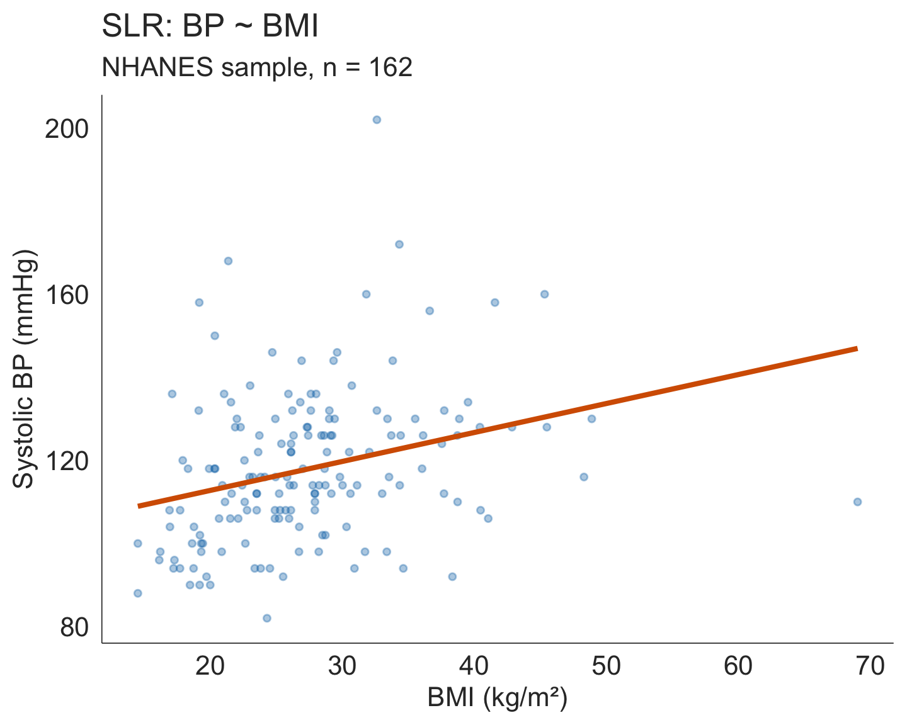
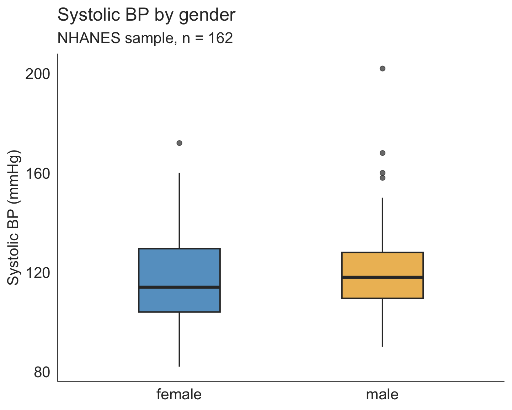
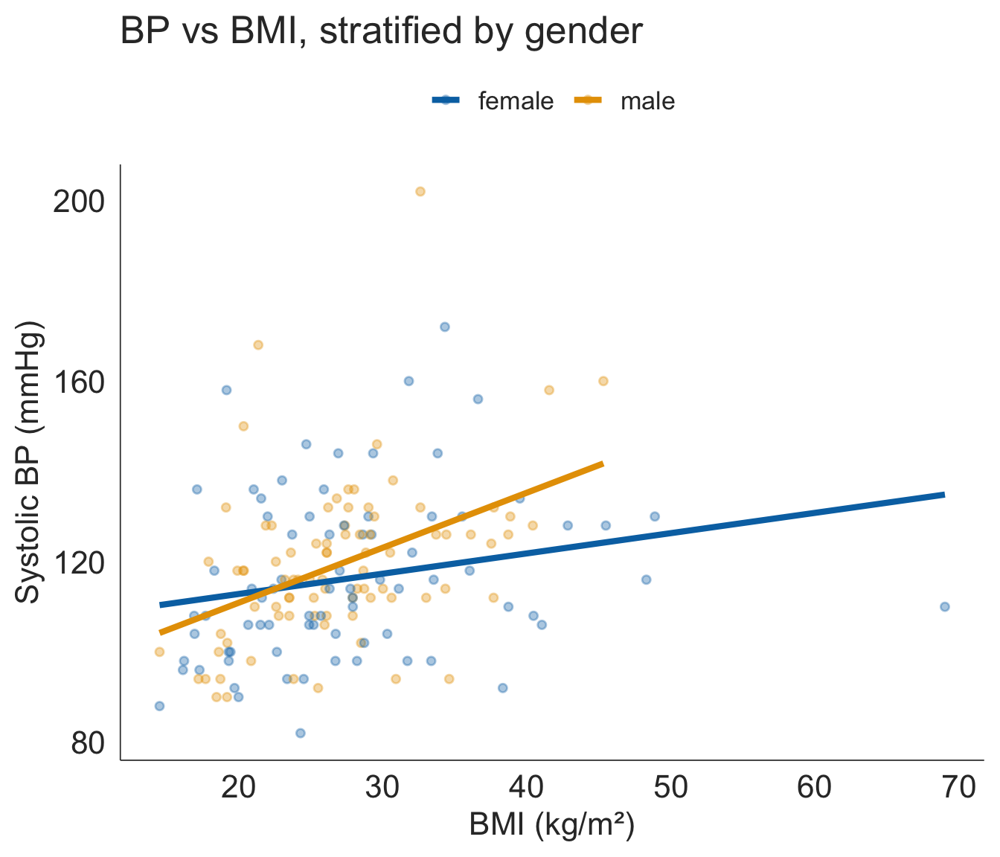

Categorical Predictors + Adjusting for Confounding
March 18, 2026
In the SLR lecture we asked:
Does BMI predict systolic blood pressure?
We fit:
\[\hat{Y} = \hat{\beta}_0 + \hat{\beta}_1 \cdot \text{BMI}\]
And found: for every 1 kg/m² increase in BMI, systolic BP is expected to increase by 0.70 mmHg on average.
But real biology is messier. Multiple variables are usually at play — age, sex, medications, comorbidities…

Part 1: Categorical Predictors
Part 2: Multiple Linear Regression
lm()
So far, the explanatory variable has always been continuous (e.g., BMI, Age).
What if the explanatory variable is categorical?
New question
Does mean systolic blood pressure differ between males and females in the NHANES sample?
You might think: “I know how to do this — it’s a two-sample t-test!” And you’re right. But regression gives us a unified framework that extends naturally to multiple predictors.
| Gender | n | Mean BP | SD |
|---|---|---|---|
| female | 78 | 116.3 | 18.4 |
| male | 84 | 119.3 | 18.0 |
Males have a slightly higher mean BP than females in this sample.

For a binary categorical variable, R creates an indicator variable (0/1) automatically:
\[\text{Gender}_{\text{male}} = \begin{cases} 1 & \text{if male} \\ 0 & \text{if female} \end{cases}\]
The model becomes:
\[E(\text{BP}) = \beta_0 + \beta_1 \cdot \text{Gender}_{\text{male}}\]
Intercept \(\hat{\beta}_0\)
The estimated mean BP for females — the group where \(\text{Gender}_{\text{male}} = 0\).
This is the reference category.
Slope \(\hat{\beta}_1\)
The estimated difference in mean BP comparing males to females.
\(\hat{\beta}_1 = \overline{Y}_{\text{male}} - \overline{Y}_{\text{female}}\)
# A tibble: 2 × 7
term estimate std.error statistic p.value conf.low conf.high
<chr> <dbl> <dbl> <dbl> <dbl> <dbl> <dbl>
1 (Intercept) 116. 2.06 56.4 1.61e-107 112. 120.
2 Gendermale 3.00 2.86 1.05 2.96e- 1 -2.65 8.66
Interpretation
The p-value (0.296) indicates this difference is not statistically significant.
Connecting to what you already know
Running lm(BPSys1 ~ Gender) with a binary predictor gives you the same p-value as a two-sample t-test (assuming equal variances).
Regression is the more general framework — it lets us add more predictors, which a t-test cannot do.
Two Sample t-test
data: BPSys1 by Gender
t = -1.0485, df = 160, p-value = 0.296
alternative hypothesis: true difference in means between group female and group male is not equal to 0
95 percent confidence interval:
-8.655674 2.652011
sample estimates:
mean in group female mean in group male
116.3077 119.3095
R chooses the reference category alphabetically — “female” comes before “male”, so female is the reference.
To change it, use relevel():
nhanes_bp_male_ref <- nhanes_bp %>%
mutate(Gender = fct_relevel(Gender, "male")) # base R equivalent: relevel(Gender, ref = "male")
lm(BPSys1 ~ Gender, data = nhanes_bp_male_ref) %>%
tidy(conf.int = TRUE)# A tibble: 2 × 7
term estimate std.error statistic p.value conf.low conf.high
<chr> <dbl> <dbl> <dbl> <dbl> <dbl> <dbl>
1 (Intercept) 119. 1.99 60.1 1.14e-111 115. 123.
2 Genderfemale -3.00 2.86 -1.05 2.96e- 1 -8.66 2.65
Note
The estimate changes sign but the magnitude and p-value are identical — we’re just asking the question from the other direction. Use whichever reference group makes the most scientific sense.
We have two questions we’d like to answer simultaneously:
And: we know BMI and gender are themselves related — males tend to have different BMI distributions than females. This creates a problem called confounding.
The solution is to put both predictors in the same model:
\[E(\text{BP}) = \beta_0 + \beta_1 \cdot \text{BMI} + \beta_2 \cdot \text{Gender}_{\text{male}}\]
Multiple linear regression (MLR)
A regression model with two or more explanatory variables. Each coefficient describes the association between that predictor and the response, holding the other predictors constant.
A confounder is a variable that is:
Example here: Gender is associated with both BMI and BP.
If we only look at BP ~ BMI, some of the apparent “BMI effect” is really a “gender effect” in disguise.
Adjusting for confounding
Including the confounder in the model lets us estimate the association between BMI and BP among people of the same gender — a fairer comparison.

The syntax extends naturally from SLR — just add predictors with +:
# A tibble: 3 × 7
term estimate std.error statistic p.value conf.low conf.high
<chr> <dbl> <dbl> <dbl> <dbl> <dbl> <dbl>
1 (Intercept) 96.6 5.32 18.2 1.16e-40 86.1 107.
2 BMI 0.710 0.178 3.99 1.02e- 4 0.358 1.06
3 Gendermale 3.58 2.74 1.31 1.93e- 1 -1.83 9.00
Note
R handles the categorical variable automatically. You do not need to create indicator variables by hand — just make sure Gender is a factor.
\[\widehat{\text{BP}} = \hat{\beta}_0 + \hat{\beta}_1 \cdot \text{BMI} + \hat{\beta}_2 \cdot \text{Gender}_{\text{male}}\]
Key rule: always say “holding the other variables constant”
BMI (0.71 mmHg): For every 1 kg/m² increase in BMI, systolic BP is expected to increase by 0.71 mmHg on average, holding gender constant.
Gendermale (3.58 mmHg): Males have, on average, a systolic BP that is 3.58 mmHg higher than females, holding BMI constant (i.e., comparing males and females at the same BMI).
Intercept: Expected mean BP for a female with BMI = 0. (Not a meaningful prediction — extrapolation.)
Unadjusted (SLR): BP ~ BMI
| Term | Est. | Lower | Upper | p-value |
|---|---|---|---|---|
| (Intercept) | 98.83 | 88.85 | 108.81 | < 0.001 |
| BMI | 0.70 | 0.35 | 1.05 | < 0.001 |
BMI slope: 0.70 mmHg per kg/m²
Adjusted (MLR): BP ~ BMI + Gender
| Term | Est. | Lower | Upper | p-value |
|---|---|---|---|---|
| (Intercept) | 96.63 | 86.13 | 107.13 | < 0.001 |
| BMI | 0.71 | 0.36 | 1.06 | < 0.001 |
| Gendermale | 3.58 | -1.83 | 9.00 | 0.193 |
BMI slope: 0.71 mmHg per kg/m²
Tip
The BMI coefficient changed slightly after adjusting for gender — a sign that gender was acting as a mild confounder. In some datasets, adjustment can dramatically change an estimate (or even flip its direction).
You’ve seen \(R^2\) as a measure of model fit. In MLR there’s a wrinkle:
\(R^2\) always increases when you add predictors
Even if a new predictor is pure noise, \(R^2\) can only stay the same or go up — making it a poor tool for comparing models with different numbers of predictors.
Adjusted \(R^2\) penalizes for the number of predictors:
\[R^2_{\text{adj}} = 1 - \frac{(1-R^2)(n-1)}{n - p - 1}\]
where \(p\) = number of predictors. A new predictor only improves adjusted \(R^2\) if it adds more than it costs.
1. Visualize
2. Ensure categorical vars are factors
3. Fit
4. Coefficients + inference
5. Model fit
6. Change reference category (if needed)
7. Interpret everything as “adjusted”
Every coefficient describes the association with \(Y\) holding all other predictors constant.
What if a categorical variable has more than two levels?
R creates one coefficient per level, each compared to the same reference group — the reference category is absorbed into the intercept and doesn’t get its own row.
Let’s create age groups from the continuous Age variable and fit the model (next slide):
# A tibble: 3 × 7
term estimate std.error statistic p.value conf.low conf.high
<chr> <dbl> <dbl> <dbl> <dbl> <dbl> <dbl>
1 (Intercept) 110. 1.62 68.1 1.60e-119 107. 113.
2 Age_group40–59 16.2 2.90 5.60 9.39e- 8 10.5 22.0
3 Age_group60+ 22.1 3.61 6.14 6.36e- 9 15.0 29.3
Reference category: “Under 40”
The intercept (110.3 mmHg) is the estimated mean BP for participants under 40 — the group that doesn’t get its own row.
Interpretation template
Every coefficient is always relative to the reference — never relative to each other.
MLR is a huge topic. Today’s lecture gives you the foundation; there’s much more in the textbook (Chapter 7) and beyond:
In your textbook (Ch. 7)
Where regression leads
BMSC 620 | Multiple Linear Regression